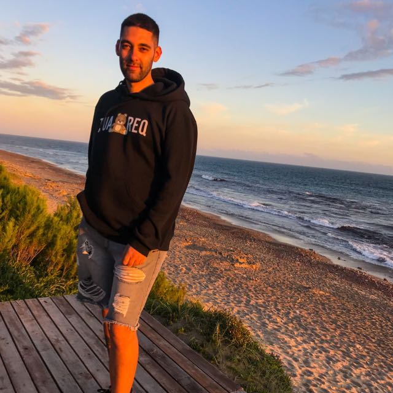

Info Viajes
Por Matias Leandro Massolo
¡Bienvenidos a Info Viajes! Mi nombre es Matias, te invito a embarcarte en un emocionante viaje a través de mis experiencias en distintos viajes. En Info Viajes, no solo encontrarás guías turísticas tradicionales, sino relatos auténticos y vivencias personales que te transportarán a lugares lejanos y te sumergirán en las culturas y paisajes que hemos tenido el privilegio de experimentar. Desde las calles adoquinadas de las ciudades más antiguas hasta las majestuosas cumbres de montañas inexploradas, quiero ser tu compañero de viaje, compartiendo consejos, anécdotas y momentos memorables. Mi objetivo es inspirarte a explorar el mundo con ojos curiosos y mente abierta. Ya sea que estés planeando tu próxima aventura o simplemente quieras vivir la emoción de viajar desde la comodidad de tu hogar, estamos aquí para proporcionarte una dosis de inspiración constante. Prepárate para descubrir lugares nuevos, aprender de otras culturas y sumergirte en la belleza del mundo a través de nuestras historias. ¡Únete a Info Viajes y hagamos juntos que cada viaje sea una experiencia única!